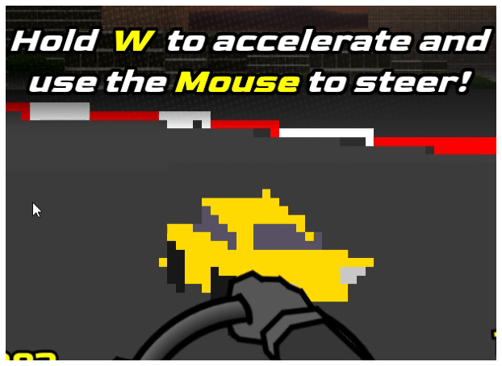
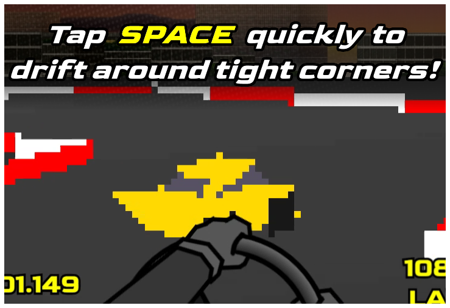

Paste a Track Code into here and click "Input Track from Code":
Use a site such as Paste Bin to share track codes with friends!
How to Play


S or Shift - Brake/Reverse
Escape or R - Pause
E - Toggle Auto-Accelerate
Q - Use Mirror
Learn about the development process and go behind
the scenes!
Music used: "Everybody Falls" and "Final Fall" from Fall Guys
Sound Effects from: Fall Guys and Half-Life 2